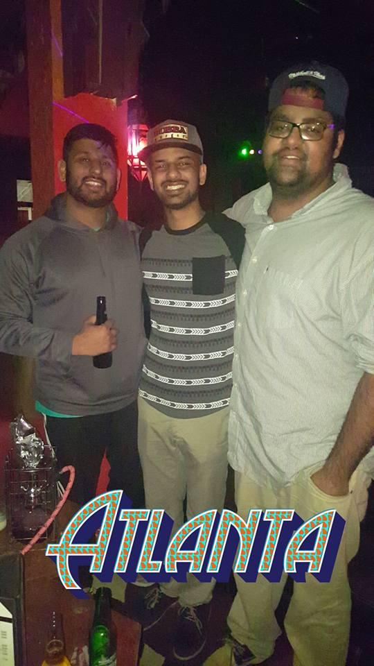

Hey my name is Kishan Patel
I currently attend Tech Talent South pursing a future career in the technology field. Before pursuing education in coding I was in under graduate school at
Southern Poly Technic University. I graduated high school in
2010 and served in the Marines for
two years before starting college at Southern Poly. Now that I'm attending Tech Talent South I hope to find a career in the tech field and hope to work at Tech Talent South.
"Cupcake ipsum dolor sit. Amet I love liquorice jujubes pudding croissant I love pudding. Apple pie macaroon toffee jujubes pie tart cookie applicake caramels. Halvah macaroon I love lollipop. Wypas I love pudding brownie cheesecake tart jelly-o. Bear claw cookie chocolate bar jujubes toffee."
"Cupcake ipsum dolor sit. Amet I love liquorice jujubes pudding croissant I love pudding. Apple pie macaroon toffee jujubes pie tart cookie applicake caramels. Halvah macaroon I love lollipop. Wypas I love pudding brownie cheesecake tart jelly-o. Bear claw cookie chocolate bar jujubes toffee."
